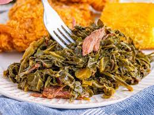

Collard Greens with Smoked Ham Hocks

Description:
This Collard Greens with Smoked Ham Hocks recipe transforms humble collard greens into a soul-warming dish. Slow-cooked with smoky ham hocks, onions, and a touch of vinegar, these greens are both hearty and tangy, making them the ideal side to complement your Southern feast.
Ingredients:
- 2 pounds collard greens, stems removed and leaves chopped
- 2 smoked ham hocks
- 1 onion, chopped
- 3 cloves garlic, minced
- 4 cups chicken broth
- 2 tablespoons apple cider vinegar
- 1 teaspoon sugar
- Salt and black pepper to taste
- Hot sauce (optional, for added heat)
Steps:
- In a large pot or Dutch oven, place the smoked ham hocks, chopped onion, and minced garlic. Add enough water to cover the ham hocks.
- Bring the water to a boil, then reduce the heat to a simmer. Cover and cook for about 2 hours or until the ham hocks are tender and the meat is falling off the bone.
- Remove the ham hocks from the pot and let them cool slightly. Shred the meat and discard the bones and excess fat.
- Return the shredded meat to the pot. Add the collard greens, chicken broth, apple cider vinegar, sugar, salt, and black pepper. If you like it spicy, add a few dashes of hot sauce.
- Bring the mixture to a simmer and cook for about 45 minutes to 1 hour, or until the collard greens are tender and flavorful. Stir occasionally.
- Taste and adjust the seasoning as needed.